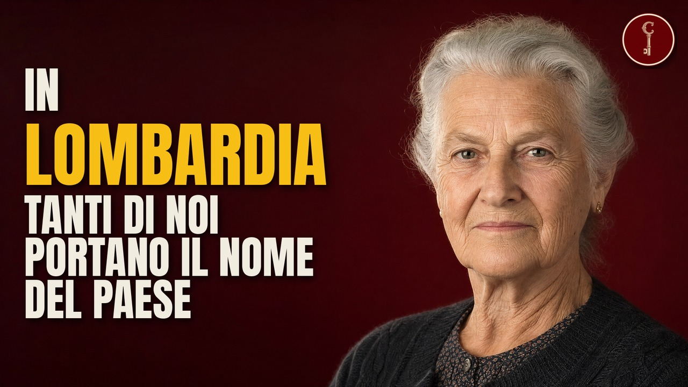

Le famiglie che possiedono l'Italia
Chi sono le famiglie più ricche d'Italia, regione per regione e tema per tema: da dove vengono, come hanno fatto i soldi e quali dei loro marchi usi già ogni giorno. Per ogni video del canale, qui trovi le fonti della ricerca e i crediti di immagini, video e mappe.
Le famiglie
Toscana
Le 17 famiglie fiorentine e toscane più RICCHE (e nessuna si chiama Medici)
Lombardia
Le 31 famiglie milanesi e lombarde più RICCHE (una fa armi da 500 anni)
Serie A
Le Famiglie più RICCHE del Calcio italiano NON sono italiane (Lo sapevi?)

Lazio
Le 14 famiglie Romane più RICCHE (non sono principi né cardinali... le conosci?)
Campania
Le 15 famiglie Napoletane più RICCHE (Alcune non le conosci, o forse si)

Veneto
Le 15 famiglie Venete più RICCHE (le conosci già?)

Sicilia
Le 13 famiglie siciliane più RICCHE (i loro marchi li conosci già)
La prima serie: i cognomi

Lombardia
La LOMBARDIA raccontata da 30 cognomi: trovatelli, valli e ladri di polli

Napoli
NAPOLI raccontata da 32 cognomi: re, santi e trovatelli

Veneto
Il VENETO raccontato da 26 cognomi: scopri le loro storie

Sicilia